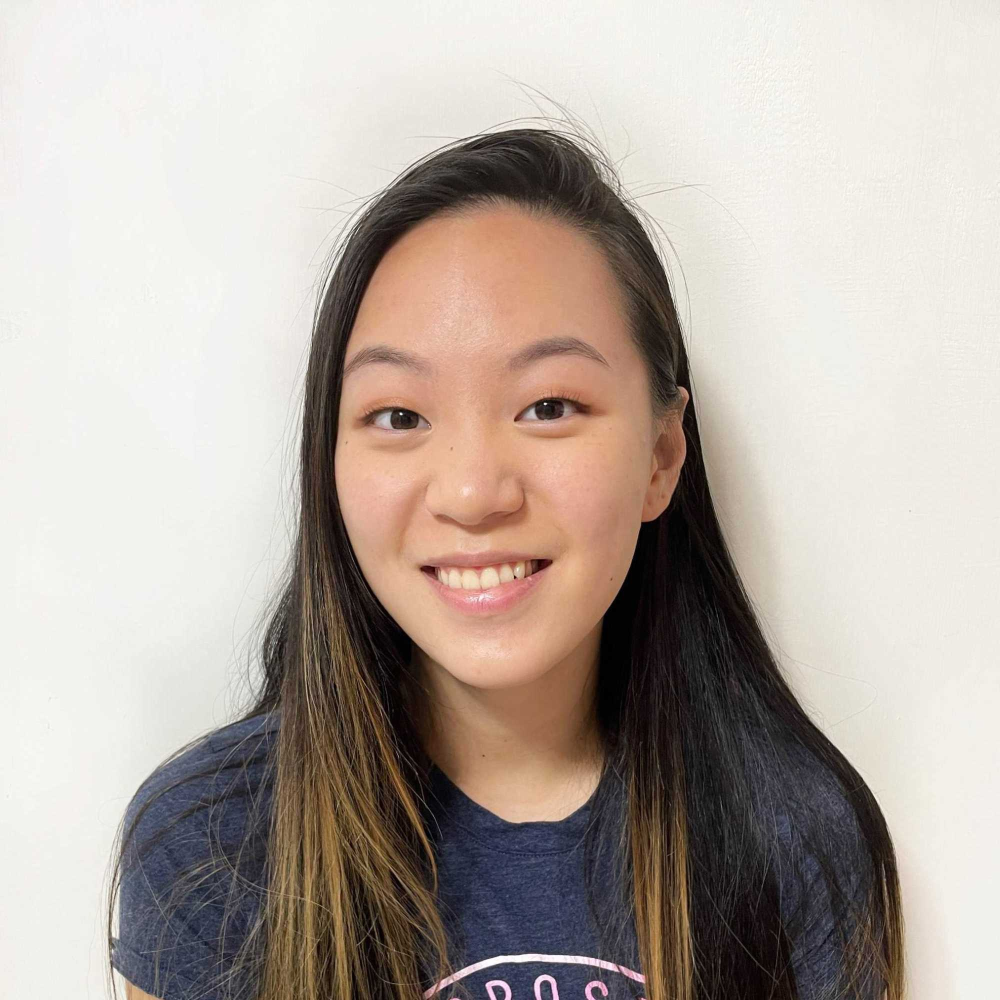
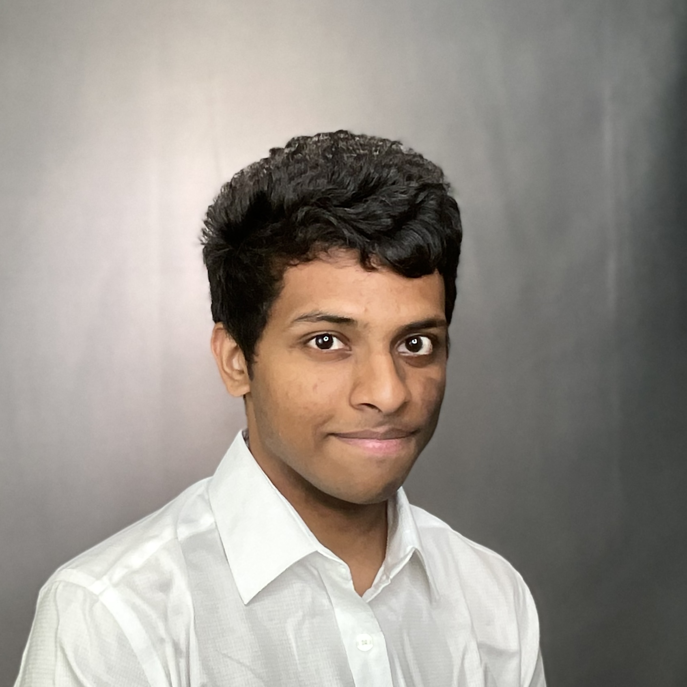

ASL Learning Game
ECE 5725 Final Project
By Bianca Tseng, Jacob Lashin, and Kishore Kannan
Demonstration Video
Overview
TODO
Project Objectives
- TODO
Design and Implementation
Hardware
TODO
Software
TODO
Figures
A figure
Another figure
Debugging and Testing
Installations and Dependencies
TODO
Datasets
TODO
Results and Future Developement
TODO
Work Distribution
TODO

Bianca Tseng
bat66@cornell.edu
Jacob Lashin
jwl266@cornell.edu

Kishore Kannan
kk848@cornell.edu
Parts List
- Raspberry Pi 4B (Provided)
- Raspberry Pi HQ Camera ($50)
- Arducam 6mm Lens for HQ Camera ($22.99)
- 3D Printed Case for Pi and Camera (NA)
- Monitor (Provided)
- Total: $72.99
References
- Picamera2 Library
- 3D Printing Model for Pi Camera Case
- MediaPipe Hands Guide
- MediaPipe Hands Landmarks
- First Training Image Dataset (28x28 resolution)
- Final Training Image Dataset
- TODO
Code Appendix
Main RPi Code
import cv2
import time
import mediapipe
import numpy as np
from picamera2 import Picamera2, Preview, MappedArray
import tflite_runtime.interpreter as tflite
import keyboard
from libcamera import Transform
import random
def borderedRect(arr, p1, p2, c1, c2, t1, t2):
dt = (t1+t2)/2
(x1, y1) = p1
(x2, y2) = p2
b1x, b1y = x1-dt, y1-dt
b2x, b2y = x2+dt, y2+dt
cv2.rectangle(arr, p1, p2, c1, t1)
cv2.rectangle(arr, b1x, b1y, c2, t2)
cv2.rectangle(arr, b2x, b2y, c2, t2)
try:
modelType = 0
interpreter = tflite.Interpreter(model_path="./model_numbers.tflite")
interpreter2 = tflite.Interpreter(model_path="./model_letters.tflite")
input_details = interpreter.get_input_details()
output_details = interpreter.get_output_details()
input_details2 = interpreter2.get_input_details()
output_details2 = interpreter2.get_output_details()
interpreter.allocate_tensors()
interpreter2.allocate_tensors()
camera = Picamera2()
preview_config = camera.create_preview_configuration({'size':(1280, 960)}, transform=Transform(hflip=1))
capture_config = camera.create_still_configuration()
camera.set_logging(Picamera2.ERROR, "logs.txt")
camera.configure(preview_config)
width = 1280
height = 960
midwidth = 640
midheight = 480
camera.start_preview(Preview.QTGL, x=10, y=10, width=width, height=height)
colour = (255, 0, 255)
origin = (10, 30)
font = cv2.FONT_HERSHEY_SIMPLEX
scale = 1
thickness = 2
display_text = ''
miny, minx = 3040, 4056
maxx, maxy = 0, 0
canSwitchMode = True
menu = False
pointercolor = (255,255,255)
state = 0
prompt = chr(ord('0') + random.randint(0,9))
answers = []
correct_count = 0
prompt_time = 0
correct_time = 0
answer_string = ""
correct = False
box_color = (255,255,255)
box_thickness = 2
score_count = 0
stats = {}
def apply_overlay(request):
global display_text
global minx, miny, maxx, maxy
global start_quit
global start_modelchange
global answer_string
global correct_time, prompt_time, score_count
with MappedArray(request, "main") as m:
if state == 0:
cv2.rectangle(m.array, (0,0), (width, height), (10,10,10), -1)
text = 'ECE 5725 Project'
cv2.putText(m.array, text, (midwidth-300, midheight-200), font, 2, (255,255,255), thickness)
text= 'ASL detection'
cv2.putText(m.array, text, (midwidth-300, midheight-100), font, 2, (255,255,255), thickness)
text = 'Loading...'
cv2.putText(m.array, text, (midwidth-150, midheight+100), font, 2, (255,255,255), thickness)
if time.time() - start_time > 0.5:
cv2.rectangle(m.array, (440, 600), (520, 680), (0,200,0), -1)
if time.time() - start_time > 1.0:
cv2.rectangle(m.array, (520, 600), (600, 680), (0,200,0), -1)
if time.time() - start_time > 1.5:
cv2.rectangle(m.array, (600, 600), (680, 680), (0,200,0), -1)
if time.time() - start_time > 2.0:
cv2.rectangle(m.array, (680, 600), (760, 680), (0,200,0), -1)
if time.time() - start_time > 2.5:
cv2.rectangle(m.array, (760, 600), (840, 680), (0,200,0), -1)
cv2.rectangle(m.array, (440,600), (840, 680), (255,255,255), 2)
cv2.line(m.array, (520,600), (520, 680), (255,255,255), 2)
cv2.line(m.array, (600,600), (600, 680), (255,255,255), 2)
cv2.line(m.array, (680,600), (680, 680), (255,255,255), 2)
cv2.line(m.array, (760,600), (760, 680), (255,255,255), 2)
else:
cv2.line(m.array, (0,740), (width, 740), (255,255,255), 4)
cv2.rectangle(m.array, (0, 0), (width, 100), (20,20,20), -1)
#cv2.rectangle(m.array, (5, 5), (width-5, height-5), (20,20,20), 20)
#borderedRect(m.array, (10,10), (width-10, height-10), (255,255,255),(10,10,10), 18,2)
#prompt_time = start of new prompt being displayed
#correct_time = start of u passing this prompt
# add a buffer between correct_time and next prompt_time to display success message and stats
if correct_time > 0:
if time.time() - correct_time < 2:
time_took = str(round(correct_time - prompt_time, 2))
text = 'Correct: ' + time_took + ' seconds'
cv2.putText(m.array, text, (500,60), font, 1, (0,255,0), 2)
else:
if prompt_time > 0:
if time.time() - prompt_time > 30:
text = 'skip!'
cv2.putText(m.array, text, (580, 60), font, 1, (255,0,0), 2)
else:
time_elapsed = 'time: ' + str(round(time.time()-prompt_time, 2))
cv2.putText(m.array, time_elapsed, (30, 60), font, 1, (255,255,255), 2 )
cv2.putText(m.array, display_text, (560,60), font, 1, (255,10,255), 2)
score = 'score: ' + str(score_count)
cv2.putText(m.array, score, (1100, 60), font, 1, (255,255,255), 2 )
#left menu box
cv2.rectangle(m.array, (40, 790), (200, 940), (255, 0, 0), 3)
#right menu box
cv2.rectangle(m.array, (width-40, 792), (width-200, 940), (0, 255, 0), 3)
cv2.rectangle(m.array, (40, 762), (200, 790), (20,20,20), -1)
cv2.rectangle(m.array, (1080, 762), (1240, 790), (20,20,20), -1)
if maxx > minx and maxy > miny:
if menu:
x8, y8 = coords[8]
cv2.circle(m.array, (width-x8, y8), 8, pointercolor, 2)
if start_quit > 0:
if time.time()-start_quit > 0.5:
cv2.rectangle(m.array, (42, 762), (70, 790), (255,10,10), -1)
if time.time()-start_quit > 1.0:
cv2.rectangle(m.array, (73, 762), (102, 790), (255,10,10), -1)
if time.time()-start_quit > 1.5:
cv2.rectangle(m.array, (105, 762), (135, 790), (255,10,10), -1)
if time.time()-start_quit > 2.0:
cv2.rectangle(m.array, (138, 762), (167, 790), (255,10,10), -1)
if time.time()-start_quit > 2.5:
cv2.rectangle(m.array, (170, 762), (198, 790), (255,10,10), -1)
if start_modelchange > 0:
if time.time()-start_modelchange > 0.5:
cv2.rectangle(m.array, (1082, 762), (1082+28, 790), (10,255,10), -1)
if time.time()-start_modelchange > 1.0:
cv2.rectangle(m.array, (1082+31, 762), (1082+60, 790), (10,255,10), -1)
if time.time()-start_modelchange > 1.5:
cv2.rectangle(m.array, (1082+63, 762), (1082+93, 790), (10,255,10), -1)
if time.time()-start_modelchange > 2.0:
cv2.rectangle(m.array, (1238-60, 762), (1238-31, 790), (10,255,10), -1)
if time.time()-start_modelchange > 2.5:
cv2.rectangle(m.array, (1238-28, 762), (1238, 790), (10,255,10), -1)
else:
dy, dx = maxy-miny, maxx-minx
p1x, p1y = width-int(minx-dx*0.1), int(miny-dy*0.1)
p2x, p2y = width-int(maxx+dx*0.1), int(maxy+dy*0.1)
midx = int((p1x + p2x)/2) - 100
bottomy = p2y+40
text = 'detected: ' + answer_string
cv2.rectangle(m.array, (p1x, p1y), (p2x, p2y), box_color, box_thickness)
cv2.putText(m.array, text, (midx, bottomy), font, 0.8, box_color, 2)
text = 'Quit'
cv2.putText(m.array, text, (104, 780), font, 0.5, (255,255,255),1)
cv2.putText(m.array, "Letters / Numbers", (1085, 780), font, 0.5, (255,255,255),1)
camera.post_callback = apply_overlay
camera.start(show_preview=True)
start_time = time.time()
time.sleep(3)
state = 1
def generate_features(coords):
relative = []
x0, y0 = coords[0]
x1, y1 = coords[1]
d = np.sqrt((x1-x0)*(x1-x0) + (y1-y0)*(y1-y0))
for i in range(20):
x, y = coords[i+1]
relative.append((x-x0)/d)
relative.append((y-y0)/d)
return relative
handsModule = mediapipe.solutions.hands
drawingModule = mediapipe.solutions.drawing_utils
start = time.time()
start_quit = 0
start_modelchange = 0
with handsModule.Hands(static_image_mode=False, min_detection_confidence=0.6, min_tracking_confidence=0.7, max_num_hands=1) as hands:
#Create an infinite loop which will produce the live feed to our desktop and that will search for hands
while state != 2:
frame1 = camera.capture_array("main") # take image from video feed
#frame1 = cv2.cvtColor(frame1, cv2.COLOR_BGR2RGB)
frame1 = frame1[:,:,:3].astype('uint8')
frame1 = cv2.flip(frame1, flipCode = 1)
#cv2.imwrite("test.jpg", frame1)
results = hands.process(frame1)
miny, minx = 3040, 4056
maxx, maxy = 0, 0
#In case the system sees multiple hands this if statment deals with that and produces another hand overlay
if results.multi_hand_landmarks != None:
if prompt_time == 0: prompt_time = time.time()
for handLandmarks in results.multi_hand_landmarks:
coords = []
found = 0
#Below is Added Code to find and print to the shell the Location X-Y coordinates of Index Finger, Uncomment if desired
for point in handsModule.HandLandmark:
normalizedLandmark = handLandmarks.landmark[point]
pixelCoordinatesLandmark= drawingModule._normalized_to_pixel_coordinates(normalizedLandmark.x, normalizedLandmark.y,1280, 960)
#Using the Finger Joint Identification Image we know that point 8 represents the tip of the Index Finger
if(pixelCoordinatesLandmark):
x, y = pixelCoordinatesLandmark
if x > maxx: maxx = x
if x < minx: minx = x
if y > maxy: maxy = y
if y < miny: miny = y
coords.append(pixelCoordinatesLandmark)
found += 1
else:
break
if found==21:
features = np.array(generate_features(coords)).astype('float32').reshape(-1, 40, 1)
output = []
if modelType==0:
interpreter.set_tensor(input_details[0]['index'], features)
interpreter.invoke()
output = interpreter.get_tensor(output_details[0]['index'])
else:
interpreter2.set_tensor(input_details[0]['index'], features)
interpreter2.invoke()
output = interpreter2.get_tensor(output_details[0]['index'])
answer = np.argmax(output, axis=1)
answer_string = ""
if modelType==0:
#display_text = ('Number: ' + chr(ord('0')+int(answer)))
display_text = ('Number: ' + prompt)
answer_string = chr(ord('0')+int(answer))
else:
#display_text = ('Letter: ' + chr(ord('A')+int(answer)))
display_text = ('Letter: ' + prompt)
answer_string = chr(ord('A')+int(answer))
answers.append(answer_string)
if correct_time == 0: #in the solving phase
if answer_string == prompt:
correct_count += 1
box_color = (0,255,0)
box_thickness = 2
else:
correct_count = 0
box_color = (255,0,0)
box_thickness = 2
if correct_count == 8:
score_count += 1
correct_time = time.time()
box_color = (0,255,0)
box_thickness = 3
if time.time() - prompt_time > 32 and prompt_time > 0:
prompt_time = time.time()
score_count = 0
if modelType == 0:
prompt = chr(ord('0') + random.randint(0,9))
else:
num = random.randint(0,24)
prompt = chr(ord('A') + num)
correct_count = 0
box_color = (255,0,0)
box_thickness = 2
else: #correct already
if time.time() - correct_time > 2:
if modelType == 0:
prompt = chr(ord('0') + random.randint(0,9))
else:
num = random.randint(0,24)
prompt = chr(ord('A') + num)
correct_count = 0
correct_time = 0
prompt_time = time.time()
box_color = (255,0,0)
box_thickness = 2
x8, y8 = coords[8]
menu = y8 > 740
if menu:
if x8 < 200 and canSwitchMode:
pointercolor = (10,255,10)
start_quit = 0
if start_modelchange == 0:
start_modelchange = time.time()
print("start switching model")
elif time.time()-start_modelchange > 3:
prompt_time = time.time()
if modelType==0:
modelType =1
num = random.randint(0,24)
prompt = chr(ord('A') + num)
else:
modelType = 0
prompt = chr(ord('0') + random.randint(0,9))
canSwitchMode = False
elif x8 > width-200:
pointercolor = (255,10,10)
start_modelchange = 0
if start_quit == 0:
start_quit = time.time()
print("start quit")
elif time.time()-start_quit > 3:
state = 2
else:
start_quit = 0
start_modelchange = 0
canSwitchMode = True
pointercolor = (255,255,255)
else:
answer = -1
menu = False
#predict here
#frame1 = cv2.rectangle(frame1, (minx-20, miny-20), (maxx+20, maxy+20), (255,0,255), 1)
#drawingModule.draw_landmarks(frame1, handLandmarks, handsModule.HAND_CONNECTIONS)
except (KeyboardInterrupt):
print('Closing')
camera.close()